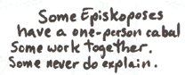
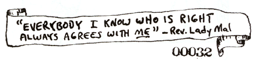

The Discordian Society has no definition.
I sometimes think of it as a disorganization of Eris Freaks. It has been called a guerrilla mind theatre. Episkopos Randomfactor, Director of Purges of Our People's Underworld Movement sect in Larchmont, prefers "The World's Greatest Association of What-ever-it-is-that-we-are." Lady Mal thinks of it as a RENAISSANCE THINK TANK. Fang the Unwashed, WKC, won't say. You can think of it any way you like.
AN EPISKOPOS OF THE DISCORDIAN SOCIETY is one who prefers total autonomy, and creates his own Discordian sect as The Goddess directs him. He speaks for himself and for those that say that they like what he says.
THE LEGION OF DYNAMIC DISCORD: A Discordian Society Legionnaire is one who prefers not to create his own sect.
If you want in on the Discordian Society
then declare yourself what you wish
do what you like
and tell us about it
or if you prefer
don't.
There are no rules anywhere.
The Goddess Prevails.
When I get to the bottom I go back to the top
of the slide where I stop and I turn and I go
for a ride, then I get to the bottom and I see
you again! Helter skelter!
-John Lennon
